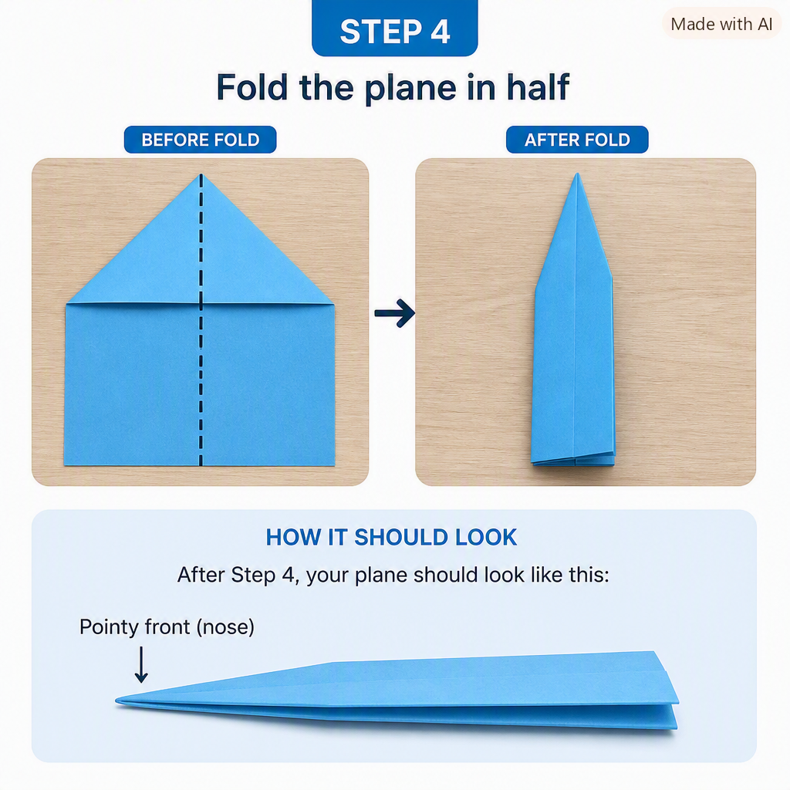

Project Portfolio

Activity 3: Paper Airplane
I asked Generative AI to teach me how to make a record-flying paper airplane as though I had never made one before. I struggled because the folding instructions were not precise enough, especially when the airplane lost its nose shape, and the images skipped from an early step to the final result without explaining the missing folds. Generative AI ultimately did not help me make the airplane, although I might have succeeded if I had continued trying but class time had ended. Part of the difficulty was that I asked for a complicated airplane instead of a simple design.

The image generated by Microsoft Copilot to help me follow the instructions did not help. It made the folding instructions unclear because it skipped several steps between the beginning and the final airplane shape. I was never able to get past step 4. Shown on the image above.